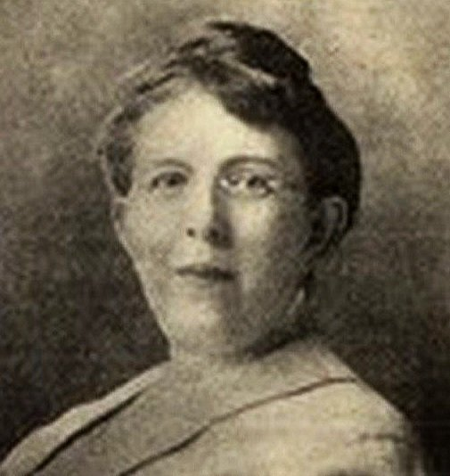

Minerva Louise Guthapfel(🇺🇸):
[1873. 9. 23 ~ 1942. 11.09]
Achievements공적
Early Life and Missionary Work생애 초기와 선교 활동
- Born on September 23, 1873, in Philadelphia, Pennsylvania, U.S.A.1873년 9월 23일 미국 펜실베이니아주 필라델피아에서 태어났습니다.
- Joined the Methodist Church and became a missionary, sent to Korea in 1903.감리교회에 입교하여 선교사가 되었으며, 1903년 한국에 파견되었습니다.
- Worked in Seoul and Gyeonggi Province as a missionary until 1912.1912년까지 서울과 경기도에서 선교사로 활동하였습니다.
- Published Happiest Girl in Korea, a collection of her articles, later translated into Korean as Okbun, the Happy Girl of Korea자신의 글을 모은 『Happiest Girl in Korea』를 출간하였으며, 이 책은 뒤에 한국어로 『Okbun, the Happy Girl of Korea』라는 제목으로 번역되었습니다
- Cultural Observations in Korea한국에서의 문화 관찰
- Critiqued the patriarchal stereotypes and superstitions prevalent in Korean society at the time.당시 한국 사회에 널리 퍼져 있던 가부장적 고정관념과 미신을 비판하였습니다.
- Highlighted the kindness and simplicity of the Korean people in her writings.저술에서 한국인의 친절함과 소박함을 부각하였습니다.
- Shared the moving story of Okbun, a 14-year-old abused girl who received amputation surgery at a Methodist hospital and still expressed happiness.학대를 받다가 감리교 병원에서 절단 수술을 받고도 행복하다고 말한 열네 살 소녀 옥분의 감동적인 이야기를 전하였습니다.
- Returned to the United States in 1912 but continued to support Korea’s independence struggle.1912년 미국으로 돌아갔으나 한국의 독립운동에 대한 지원을 계속하였습니다.
- In 1919, after learning about the March 1 Movement, she toured Midwest churches, informing them about the situation in Korea.1919년 3·1운동 소식을 접한 뒤 중서부 지역의 교회들을 순회하며 한국의 상황을 알렸습니다.
- Joined the Korean Friendship Society in Chicago as secretary, advocating for Korean independence and raising funds for relief efforts.시카고 한국친우회에 서기로 참여하여 한국의 독립을 호소하고 구호 자금을 모았습니다.
- Issued a circular in 1920 condemning Japanese atrocities in Korea and petitioned the U.S. Congress for Korean independence.1920년 일제가 한국에서 저지른 만행을 규탄하는 회람문을 발행하고, 미국 의회에 한국의 독립을 청원하였습니다.
- In 1921, co-signed a petition urging the inclusion of a Korean representative at the Washington Conference on Disarmament.1921년 워싱턴 군축회의에 한국 대표를 포함시킬 것을 요구하는 청원에 함께 서명하였습니다.
- Continued to serve as a Methodist missionary until her death on November 9, 1942, in Evanston, Illinois.1942년 11월 9일 일리노이주 에번스턴에서 별세할 때까지 감리교 선교사로 봉직하였습니다.
- Interred in a Chicago cemetery.시카고의 한 묘지에 안장되었습니다.
- Honored by the South Korean government with a national pavement in 2015 for her contributions to the Korean independence movement.2015년 대한민국 정부는 한국 독립운동에 기여한 공로로 그에게 국민포장을 수여하였습니다.
Advocacy for Korean Independence한국 독립 지지 활동
Legacy and Recognition유산과 서훈